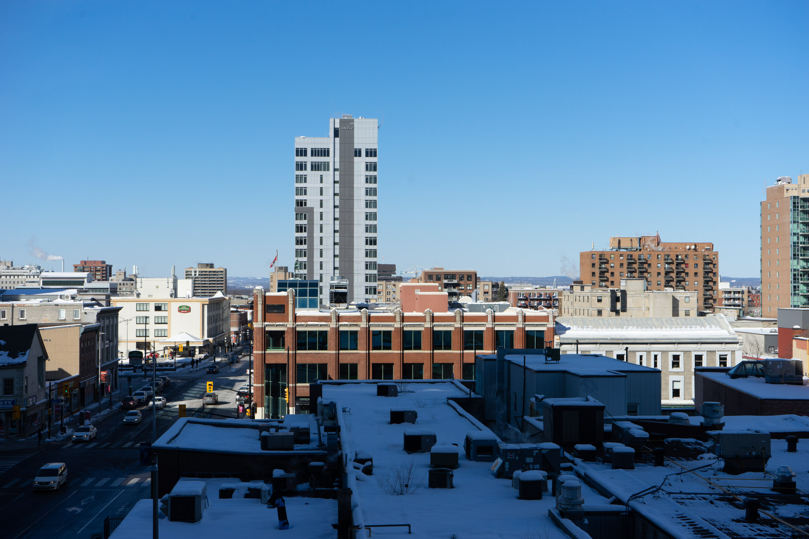

About me
Hello.I am Gexuan from China, maybe you can tell it from my name. I have been in Ottawa for one week. I am on my quarantine now. I had my second-time covid-19 test the day before yesterday. The result comes out to be not detected, which is a relief to me. I am now pretty homesick and missing my family and my dogs.
I pray for the world to be safe and thriving again. This year is a challenging year for people from all over
the world. We are anxious in the shadow of the virus. But we still have to unite to fight the virus.
A couple of months ago, I read a book named 《The choice:
Embrace the possible》which written by
Dr.Edith Eva Egar. She is
my mentor in my darkest hour. Her extraordinary life shines like a star in my mind.
Freedom lies in learning to embrace what has happened.-Edith
My hobbies
- I like drawing.
- I like taking photos.